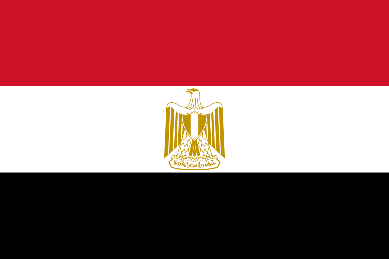
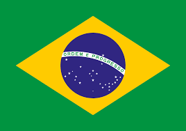
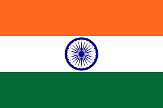

Water quality directly impacts ecosystems, agriculture, and industries. This table highlights **key water quality indicators** in major global rivers, helping identify risks and necessary actions for sustainable water management.
| Location of the River | Country | Water Quality Score (%) | pH Level | Turbidity (NTU) | Dissolved Oxygen (mg/L) | Bacteria Levels (CFU/mL) | Contaminants Present |
|---|---|---|---|---|---|---|---|
| Dnipro River | Ukraine | 72% | 7.2 | 5.0 | 7.5 | 600 | Moderate |
| Nile River |  Egypt | 85% | 7.1 | 3.2 | 8.5 | 250 | Low |
| Amazon River |  Brazil | 78% | 6.8 | 4.1 | 7.9 | 500 | Moderate |
| Ganges River |  India | 65% | 7.3 | 5.8 | 6.5 | 1200 | High |
| Yangtze River |
|
80% | 7.0 | 3.5 | 8.2 | 400 | Moderate |
| Mississippi River |
|
77% | 7.5 | 4.0 | 7.8 | 550 | Moderate |
| Thames River |
|
90% | 7.8 | 2.8 | 9.0 | 200 | Low |
| Mekong River | Cambodia | 68% | 6.9 | 5.2 | 7.1 | 1100 | High |
Tracking these indicators helps prevent pollution, protect biodiversity, and improve water sustainability worldwide.